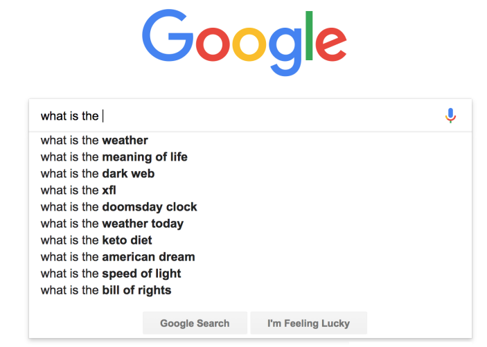
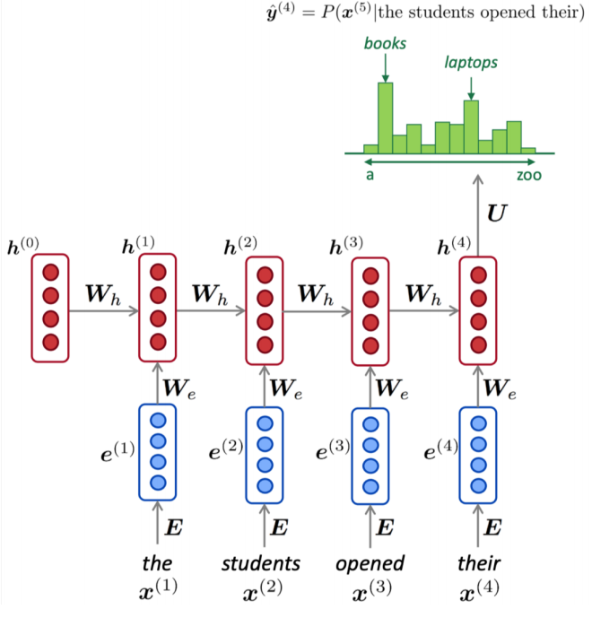
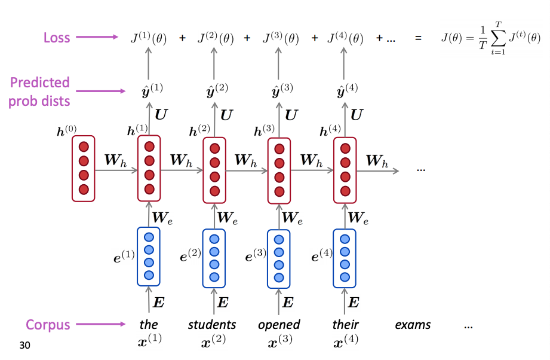
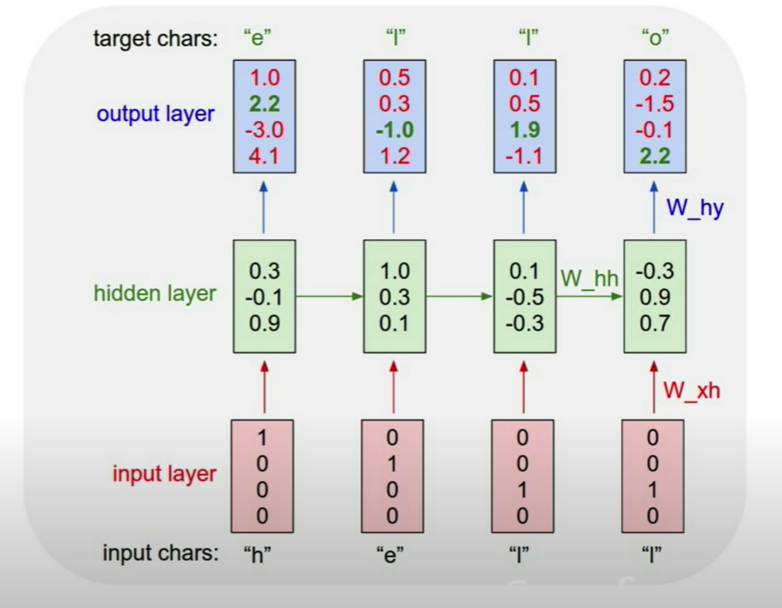
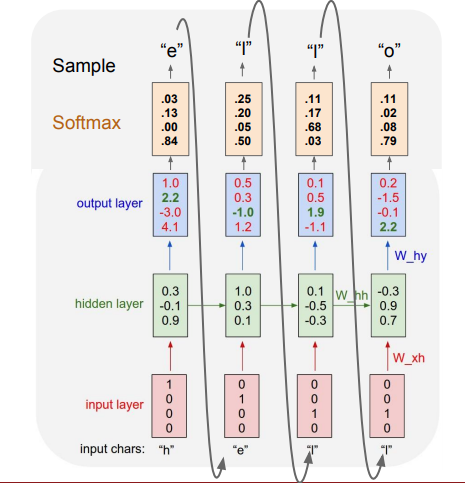

RNN Language Models
Contents
4. RNN Language Models#
These notes heavily borrowing from the CS229N 2019 set of notes on Language Models.
4.1. What is a language model?#
 *Language model example that completes the search query. We need a language model that given a sequence of words \(\{ \mathbf w_1, ..., \mathbf w_t \}\) it returns
Language models in general compute the probability of occurrence of a number of words in a particular sequence. How we can build language models though ?
The probability of a sequence of \(m\) words \(\{\mathbf w_1, ..., \mathbf w_m \}\) is denoted as \(p(\mathbf w_1,...,\mathbf w_m)\). Since the number of words coming before a word, \(\mathbf w_i\), varies depending on its location in the input document, \(p(\mathbf w_1,...,\mathbf w_m)\) is usually conditioned on a window of \(n\) previous words rather than all other words:
To compute these probabilities, the count of each n-gram would be compared against the frequency of each word. For instance, if the model takes bi-grams, the frequency of each bi-gram, calculated via combining a word with its previous word, would be divided by the frequency of the corresponding unigram. For example for bi-gram and trigram models the above equation becomes:
Counting these probabilities is notoriously space (memory) inefficient as we need to store the counts for all possible grams in the corpus. At the same time when we have no events in the denominators to count we have no possibility of estimating such probabilities (the so-called sparsity problem).
To solve these issues we will create neural models that are able to predict the required word.
4.2. LSTM Language Models#
When we focus on making predictions based on a fixed window of context (i.e. the \(n\) previous words), in some cases, the window may not be sufficient to capture the context. For instance, consider a case where an article discusses the history of Spain and France and somewhere later in the text, it reads “The two countries went on a battle”; clearly the information presented in this sentence alone is not sufficient to identify the name of the two countries.
Out of the many neural architectures and to provide the required long memory (up to a point that is) we will use the LSTM architectures as shown next.
 RNN Language Model. Note the different notation and certain replacements must be made: \(W_h → W\), \(W_e \rightarrow U\), \(U → V\)
To train an LSTM language model
We start with big corpus of text which is a sequence of tokens \(\mathbf x_1, ..., \mathbf x_{T}\) where T is the number of words / tokens in the corpus.
Every time step we feed one word at a time to the LSTM and compute the output probability distribution \(\mathbf{\hat y}_t\), which is, by construction, a conditional probability distribution of every word in the dictionary given the words we have seen so far.
The loss function at time step \(t\) is the classic cross entropy loss between the predicted probability distribution and the distribution that corresponds to the one-hot encoded true next token.
Average all the t-step losses
This is visually shown in the next figure for a hypothetical example of the shown sequence of words.
 RNN Language Model Training Loss. For each input word (at step t\(t\)), the RNN predicts the next word and is penalized with a loss \(J_t(\theta)\). The total loss is the average across the corpus.
In practice we don’t compute the total loss over the whole corpus but we train over a finite span and compute gradients over that span iterating on a stochastic gradient decent optimization algorithm.
Example:
Character-level language models have achieved state of the art NLP results by Facebook Research. As a simple example, lets assume the very small vocabulary {‘h’,‘e’,‘l’,‘o’} and tokens are single letters represented in the input with a one-hot encoded vector.
 RNN language model example - training ref. Note that in practice instead of one-hot encoded word vectors we will have word embeddings.
Let feed into the RNN the sequence “hello”. The letters will come in one at a time, each letter going through the forward pass that produces at the output the \(\mathbf y_t\) that indicates which letter is expected to arrive next. You can see, since we are just started training, that this network is not predicting correctly - this will improve over time as the model is trained with more sequence permutations form our limited vocabulary.
During inference we will use the language model to generate the next token.
 RNN language model example - generate the next token reference